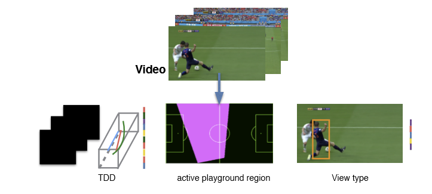

Career Summary
I am a PhD student at CMU advised by Prof. Vyas Sekar and Prof. Anthony Rowe. I am working on the problem of IoT security and applying machine learning to solve interesting challenges in computer networks and systems.
Publications
DeepEdge: A Network Edge for Deep Learning Workloads
DeepEdge runs on a PC form factor device, and is able to support multiple camera streams and DNN models. DeepEdge leverages new techniques for profiling the DNN models, which are then used to schedule the workloads based on the structure of the DNN, and allocate the resources for each model and camera stream based on their relative importance.

Low-Cost Aerial Imaging for Small Holder Farmers PDF
We present TYE, a platform aimed at small holder farmers to enablethem to reap the benefits of precision agriculture by acquiringhigh resolution aerial imaging and insights over very large areasor over extended periods of time while keeping costs as low aspossible

Fall-curve: A novel primitive for IoT Fault Detection and Isolation PDF
This paper presents a novel primitive, which we call the Fall-curve – a sensor’s voltage response when the power is turned off – that can be used to characterize sensor faults. The Fall-curve constitutes a unique signature independent of the phenomenon being monitored which can be used to identify the sensor and determine whether the sensor is correctly operating.

Automated top view registration of broadcast football videos PDF
For the Task of Image registration we propose an alternate approach exploiting the edge information and demonstrate its success in a specific scenario of registering football broadcast video frames on the static top view model of the playing surface

|

|
Automatic analysis of broadcast football videos using contextual priors PDF
we show that contextual information can be harnessed for automatic analysis of sports videos. Specifically, given an input video, we output per frame information about camera angles and the events (goal, foul, etc.). Our main insight is that in the presence of temporal context (camera angles) for a video, the problem of event tagging (fouls, corners, goals etc.) can be cast as per frame multiclass classification problem.

Fine Grain Annotation of Cricket Videos PDF
We present a solution that enables rich semantic annotation of Cricket videos at a fine temporal scale. Our approach circumvents technical challenges in visual recognition by utilizing information from online text-commentaries. We obtain a high annotation accuracy, as evaluated over a large video collection.
Event Recognition in Broadcast Soccer Videos PDF
In this paper we propose an approach for soccer event recognition using deep convolutional features combined with domain-specific cues. This approach uses deep convolution feature (TDD) in combination with our proposed algorithm of Automated top view registration to improve upon the task of Event recognition.
Preprints
Learnability of Learned Neural Networks PDF
Education
-
PhD in ECECarnegie Mellon University2018 -
-
MS By ResearchIIIT Hyderabad, India2014 - 2016
-
Btech in Computer ScienceIIIT Hyderabad, India2010 - 2014
Experience
-
Research FellowMicrosoft Research India2016 - 2018
-
Research AssistantCenter for Visual Information and Technology (CVIT) IIIT-H
-
HackerRankSoftware Developer InternSummer 2015
Awards
-
Media CoverageMedia coverage of our Research work on Fine Grain Annotation of Cricket Videos by NDTV , Washington Post, theStack, theRegister
-
Dean's listEnlisted in Dean’s list of Academic excellence at IIIT Hyderabad
-
Technical Achievement AwardWon outstanding technical achievement award for our project FarmBeats as part of Microsoft AI School